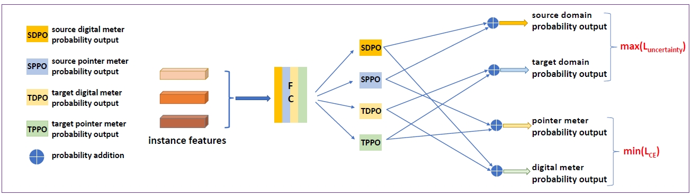
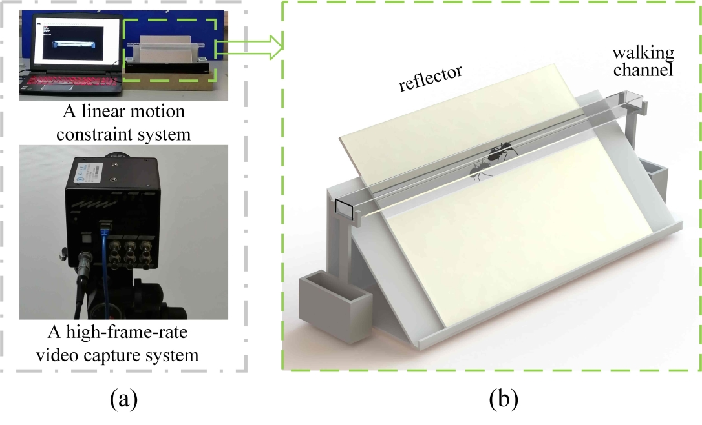
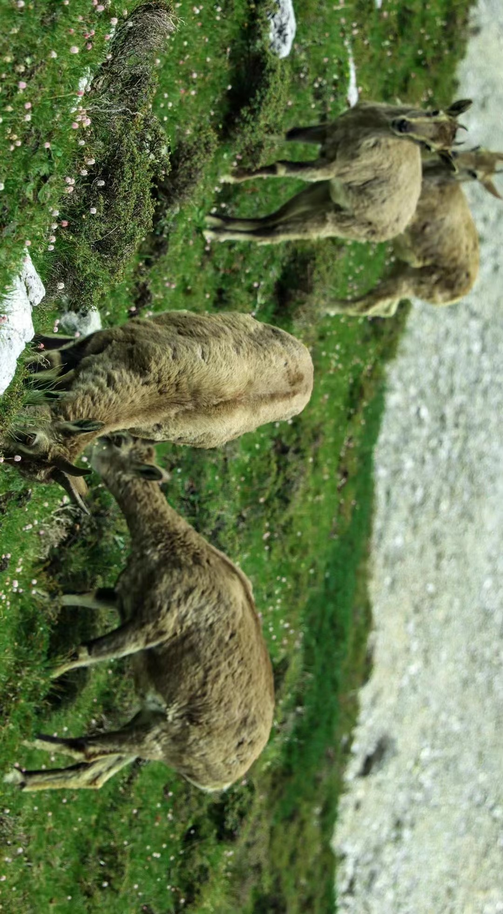

I am a second year master student at School of Electrical and Information Engineering, Tianjin University. My major is electronic information. I received my B.E. in automation from Tianjin University in 2022.
My research interests and fields lie in deep learning, computer vision and intelligent robots. And I plan to apply for PhD degree in EECS in 2024 Fall.
Publications

2023 IEEE TRANSACTIONS ON INSTRUMENTATION & MEASUREMENT
"Few-shot Industrial Meter Detection Based on
Sim-to-Real Domain Adaptation and Category
Augmentation"
[website]
[github]

2023 42nd Chinese Control Conference (CCC),
"Motion Capture and Gait Analysis of Ants with Leg Injuries"
[website]
Projects
Power Inspection Robot Based on Intelligent State Perception
• Design and realize a crawler-type robot capable of traversing various complex terrains (e.g., grass, steps, gravel, sand).
• Multi-sensor fusion: Applied dual-spectrum head to collect visible and infrared images, and employed gas sensors to collect the concentrations of various toxic gases (such as SF6 and O3) in real-time.
• Adopted LAN self-organizing network technology and 4G communication technology to establish communication with the on-site operation terminal and remote client respectively, in which the LAN communication distance was greater than 500m, and remote client host computer was developed to visualize image data and toxic gas field distribution field.
• Deployed a power meter detection and reading algorithm based on deep learning on the remote client to complete the power meter identification task in real-time and improve the intelligence level of power inspection work.
Fully Separated Intelligent Garbage Classification Guidance System
• Collected a large number of high-quality real garbage images, conducted data organization and cleaning, and constructed a large-scale garbage image dataset named GarbageNet with 100,000 images.
• Utilized Swin-Transformer to train on GarbageNet, achieved a final classification accuracy of 95% on the test set for 34 major categories and a classification accuracy of 99% in the four categories of recyclable, hazardous, kitchen waste, and other waste, and deployed the model on the edge computing device Jetson Nano.
• Realized the communication and work of the fully separated intelligent trash can based on the built ROS environment: the upper computer applied Jetson Nano, and the lower computer applied STM32 microcontroller and equipped with infrared, ultrasonic and other sensors.
• Relied on Jetson Nano to identify the images collected by the camera in real-time using the deployed classification algorithm, and sent the identification results to the corresponding STM32 to control the trash can.
Intelligent Auxiliary Sensing System for Aircraft Tractors
• Completed the use of yolov5 under the DeepStream framework, and proved the speed and accuracy of yolov5 through data comparison with other target detection algorithms.
• Completed the writing of MATLAB and Python code for multi-step trajectory prediction based on particle filtering.
• Utilized C and C++ to write DeepStream plug-ins in the Linux environment to complete the packaging of background data, and applied Socket communication to send it to the front end to complete data interaction.
Photography
I'm also interested in landscape photography!

Ulambutong, Inner Mongolia, China

Garze, Sichuan, China
Guangzhou, Guangdong, China
Tianjin, China
Contact
-
E-mail: zst806038347@tju.edu.cn
-
Tel: +86-18992610022
-
Address: 26E Building, Tianjin University, 92 Weijin Road, Nankai District, Tianjin
{kind=link}
{kind=link}
{kind=link}
{kind=link}
{kind=link}